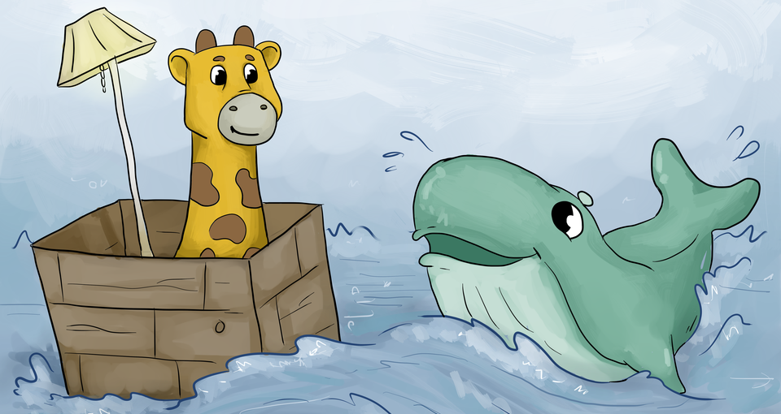

Starting your journey with Captain Kube
Bhavin Gandhi
Image Credits: phippy.io (CC-BY 4.0)
Should the way we deploy things change?
“Kubernetes” is the Greek word for a ship’s captain.
The Kubernetes project focuses on building a robust platform for running thousands of containers in production.

Image Credits: phippy.io (CC-BY 4.0)
Isolated processes running with their dependencies
Image Credits: phippy.io (CC-BY 4.0)
Start with stateless applications followed by stateful applications and then move databases
Make sure you containerize them correctly
bhavin192[at]geeksocket.in
These slides are released publicly under
Creative Commons Attribution-ShareAlike 4.0 International (CC BY-SA 4.0)